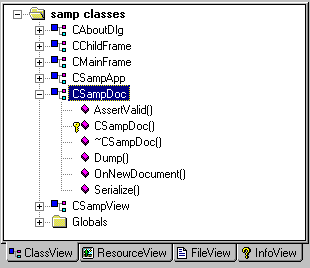

Understanding the
AppWizard and ClassWizard in Visual C++ Version 6.x
by Marshall Brain
Introduction
to the AppWizard Files
The framework
that the AppWizard generates typically consists of at least 20
different files. The first time that you see those files and begin
to wade through them they can be extremely confusing unless you
have an appropriate roadmap. The purpose of this tutorial is to
provide you with that roadmap.
Let's start by creating a simple framework with the AppWizard. To create this framework we will use all of the default settings for the AppWizard's options. Once the AppWizard has generated the files for this default framework we can go through each one to see what they all do.
Select the New option in the File menu. In the dialog that appears, make sure that the Project tab is selected. We want to create an AppWizard workspace, so select "MFC AppWizard(exe)" from the choices. Along the right side of the window is a dialog that lets you name the project, choose the project type, and pick the project's directory. Choose the appropriate directory in which to create the new samp directory by leaving it blank (a new directory will be created in your current directory) or type the path directly. Name the project "samp". This name will be used as the new directory name as well, and that is fine - you will see the word "samp" echoed in the Location field as you type it. Click the OK button to create the new project.
| Visualizing Class Hierarchies |
|---|
|
One of the most frusterating things
when you are first learning MFC is the "Where am I?"
feeling you get. MFC has hundreds of classes, and the
AppWizard adds several more. A good way to get around this feeling
is to use a class hierarchy visualization tool like CodeVizor.
With CodeVizor you can drag the source code for MFC into the
CodeVizor tool and in about 30 seconds have a beautiful, clickable
(and printable!) class hierarchy chart. You can even color classes
individually or in groups so that they stand out! Get CodeVizor and see how much easier undestanding class hierarchies becomes! |
You will next see a group of six colorful option dialogs. You can move between them with the Next and Previous buttons. Look through them now. We do not want to change any of the default options, so when you are through looking at them click the Finish button. You will see a final dialog that summarizes your choices. Click OK on this final dialog and the AppWizard will create the new framework, after displaying what options have been selected so that you can make sure it is what you really want.
Use the File Manager to look into the new directory that the AppWizard created. It will contain about 20 files. Here's a quick summary of all of these different files:
Typically you will modify only the last seven files when creating a new application. You will use the ClassWizard to help with the modifications to the document and view classes, and you will use the resource editors to modify the resource files.
A quick note on the workspace view in Visual C++ 5.x. The workspace view typically appears on the left side of the Visual C++ windows and looks like this (if you cannot see it, choose the Workspace option in the View menu):

The project window has 4 tabs along the bottom. In the figure the ClassView tab is selected. This view shows you all of the classes in the application. If you click on the small plus signs, you can see the functions in each class. You can double click on a class or function name and VC++ will take you to that point in the code. The ResourceView tab shows you the resources in the application. Open all of the resources and look at them by double clicking. You will find that this application has an accelerator table, an about dialog, two icons, two menus, a string table, a toolbar and some version information. The FileView tab shows you the files that make up the application (if you are upgrading from VC++ 2.x this is the view you are familiar with). You can delete files from the project here by selecting a file and hitting the delete key. The InfoView tab shows you the help files.
Build and execute this framework so that you can see its default behavior. To do this, choose the Build samp.exe option in the Build menu, and then choose the Execute samp.exe option in the Build menu. You will find that the application has the expected menu bar, and that several of the menu options fully or partially work. For example, the Help option brings up an about dialog and the Open option brings up an open dialog. The application has a toolbar, a status bar, an about box, etc. In other words, it is a fairly complete application framework.
To get an idea of how you might modify this framework using the ClassWizard, try the following example. Select the ClassWizard option in the View menu. Make sure that the Message Maps tab is selected. Make sure that the CSampView class is selected in the Class Name combo box. In the Object Ids list choose the first item: CSampView. In the Messages list choose WM_MOUSEMOVE. Click the Add Function button. Make sure that the OnMouseMove function is selected in the Member Functions list and click the Edit Code button. The ClassWizard will create the new OnMouseMove function, add it appropriately to the message map, and then deposit you at that point in the view class. Modify the function so that it looks like this:
void CSampView::OnMouseMove(UINT nFlags, CPoint point)
{
if (nFlags == MK_LBUTTON)
{
CClientDC dc(this);
dc.Rectangle(point.x, point.y,
point.x+5, point.y+5);
}
CView::OnMouseMove(nFlags, point);
}
Build and execute the application. When you drag the mouse in the window you will find that it draws small 5 by 5 rectangles whereever the mouse goes. The CClientDC class creates a "device context" that allows you to draw in a window. We use the dc to draw each rectangle. CClientDC derives its behavior from the CDC class, which you will find, when you look it up in the MFC help file (click on the word and then press F1), contains about 100 different drawing functions. Experiment if you like with these functions. They are all fairly self explanatory. While you are in the help file it wouldn't hurt to take a look at the CDocument and CView classes to start getting a feel for them.
To get an idea of how the resource editors work, open SAMP.RC by clicking on the ResourceView tab in the project window. Open the Dialog folder and then double click on the IDD_ABOUTBOX dialog and the template for the About box will appear. Click on one of the static text strings to bring it into focus. Hit Enter and a dialog appears which you can use to modify the string. Under the General tab, change the text in the "Caption:" field. Build and execute to see the changes to the About box.
In the next tutorial we will make a number
of changes to the document class, view class and resource file
to create a simple but complete drawing editor.